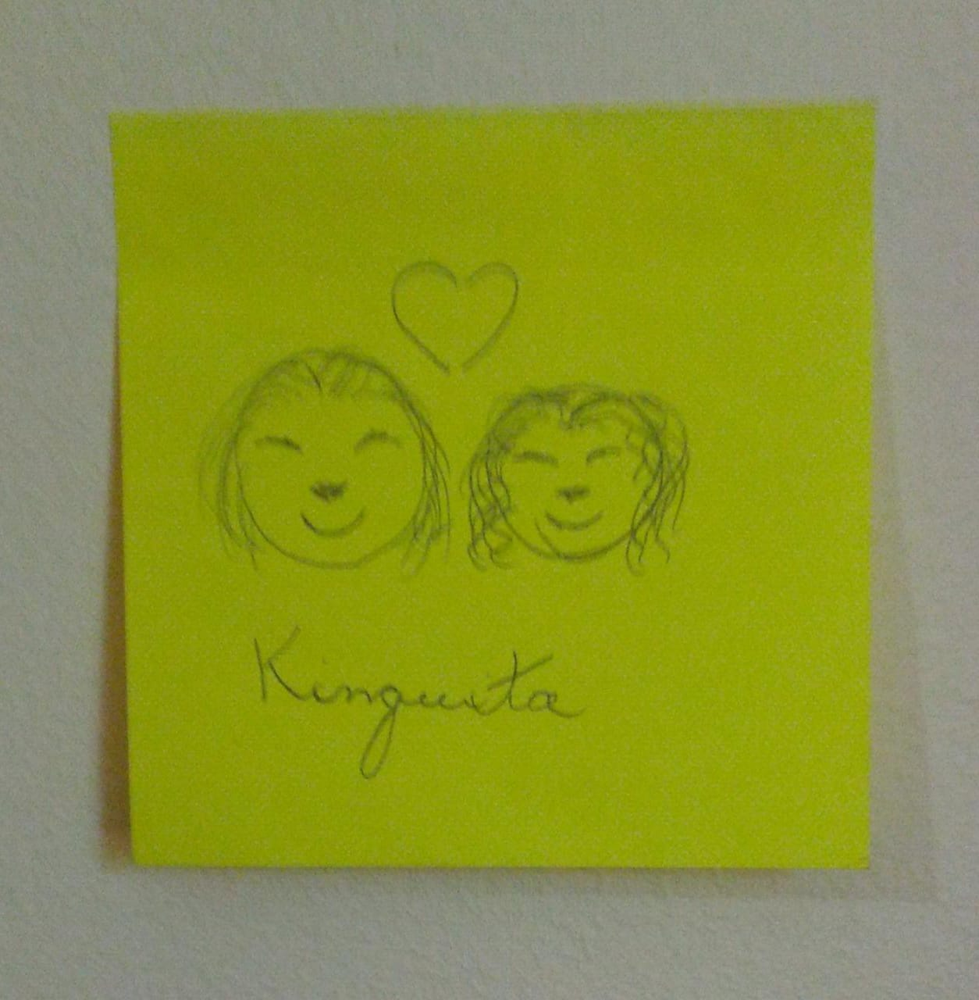

Créditos
Você já consegue ver os créditos de quase tudo só clicando em cada conteúdo. Nessa página eu só colocarei os créditos de algumas coisas nas qual eu não consegui colocar, além de mais alguns extras. Acesse o repositório deste site clicando aqui
OBS: Eu sei, o plano de fundo não está combinando o tema da página. Eu decidi escolher esse plano de fundo pois queria dedicar a partes dos crétidos para algo mais descontraído e sem compromisso com muitas coisas. A fotografia do fundo foi tirada pela própria Franguito, por isso a escolha.
Aprendizado
Tudo o que você está vendo eu aprendi pela internet gratiutamente. A maior parte disso tudo eu aprendi pelo Curso em vídeo no youtube, algumas coisas eu ia aprendendo pesquisando por aí mesmo e em alguns fóruns.
Ferramentas
- Para edição de imagens eu utilizei o Photoshop
- Para seleção de fontes, utilizei DaFont
- Para organização da palheta de cores, usei Coolors
Imagens de fundo
Infelizmente o IMBECIL aqui esqueceu de salvar o link das páginas de onde pegou as imagens de fundo, pois foram várias e várias. Então eu vou ficar devendo essa, mil perdões. Mas caso queira saber: eu apenas pesquisei por "cute wallpapers" por aí.
esse site possui uma página 404 personalizada!